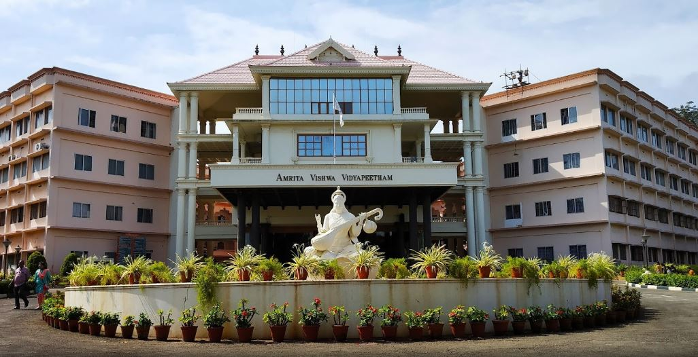

ABOUT ANOKHA
“Anokha Techfest, the annual event of Amrita School of Engineering, Coimbatore provides an unique opportunity for students to participate
in fun-filled and challenging events and workshops. The event throws open opportunities for students from all disciplines to challenge themselves and
foster the “Can Do” attitude. One of the key highlights of the Anokha 2022 edition was the Green Anokha concept. It was so wonderful to see the students
adopt and implement our Chancellor AMMA’s idea of “Living in Harmony with Nature”. It was plastic-free and eco-friendly Anokha – an initiative that will
become a tradition!!”, Dr. Sasangan Ramanathan, Dean, Faculty of Engineering, Amrita Vishwa Vidyapeetham.

• 10th edition of the techfest of Amrita School of Engineering, Amrita Vishwa Vidyapeetham, Coimbatore held from March 31 to April 02, 2023.
• Special event as it is happening on the silver jubilee year of the Amrita Vishwa Vidyapeetham, Coimbatore campus.
• Tag lines of techfest are “Dare to be Different” and “Bigger, Better & Greener”.
• One of India’s top techfests and first to have United Nations Academic Impact (UNAI) accreditation.
• A new dimension added to this 10th edition as Anokha emerging as perhaps the first green techfest in India.
This year’s Theme was Green Anokha with a vision to have a fully smart and green campus. Various activities towards
this include e-passport or Anokha pass for all participants, no printing with all information on events and workshops on Anokha app,
fully cashless transactions using e-wallet developed by students, no plastic policy, eco-friendly & bio-degradable cutlery, smart
dustbins, electric vehicles and cycle rally to kickstart the event.
• Participation by thousands of students all over India.
• Major sponsors of the 2020 edition included Cognizant, Analog Devices, H&R Block, Infoview, State Bank of India (SBI) and SkillsDA.
• A new addition to the techfest in the 2020 edition was the Techfair showcasing 75 student innovations with opportunity provided to support
the top innovations towards business incubation. Various student innovations on display included humanoid robotics, portable single-seater
two-wheeler, automatic gear changing system, anemia detector, electronic waste management, AR based indoor navigation etc, RC plane and
air-purifier helmet.
• 50 highly competitive events in all branches of engineering, gaming and robotics. Popular contests and competitions included Robowarz,
Amrita’s version of Battlebots, Death race, Autonomous robots & Drone challenge, Arduino U know, Hydropowered Rocket, Paper wings, Robosoccer,
King of Concrete and master of circuits.
• 25 workshops by premier companies like Intel, Cisco, Robert Bosch, Mathworks, Nvidia, 24*7 AI in cutting-edge areas like Deep Learning, Welding,
CANSAT, Ideabox, Machine Learning, IoT, Simulink, etc.
• Lumiere, TEDx like premium talk series showcasing success stories from all walks of life such as Sivakumar Palaniappan, Corporate coach and
motivational speaker, Biglee Murali Vijayakumar, fitness coach and former Mr. South India among others.
• School zone events for school students to give them a fascinating glimpse of engineering and technology.
• Extensive events for students of arts, sciences and humanities like e-pictures short film contest, mass communication event, Anwara combining
fashion, fitness and photography and an exclusive Model United Nations (MUN) event titled Vidhan. E-pictures contest was judged by Dhanush Natraj,
acclaimed ad filmmaker and the Anwara event featured Poornima Indrajith, actress & designer among others.
• Entertainment spectacle with performances by Raagasudha and Natyasudha student clubs and Eventide concert by acclaimed playback singer, Karthik.
• The organizing committee for Anokha 2023 of faculty members Mr. M. Sreevalsan, Prof. Prashant R. Nair & Dr. K.V. Shriram as Conveners and
Mr. Gopakumar P., Mr. Baskar A., Dr. C. Arunkumar, Mr. Ritwik M. & Mr. Vijay Narayanan as Co-Conveners.

Anokha, the national engineering techfest of Amrita School of Engineering, Coimbatore, is a 3-day congregation of some of the brightest minds in India.
Founded in 2010, Anokha has grown by leaps and bounds and has progressed to become one of the most popular and top techfests in India. Having successfully
completed eight editions, Anokha has had an average annual participation of over 10,000 of the best undergraduate engineering students from top-ranking
engineering institutions in India like IITs, BITS, NITs and IIITs participating as well as partner universities in USA and Europe like University of
New Mexico, EVRY France and Uppsala University-Sweden.